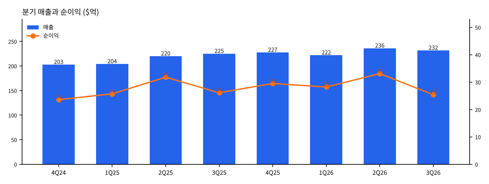
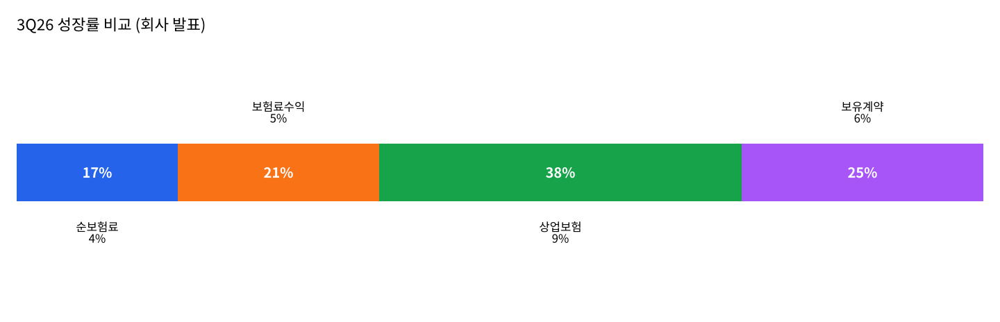
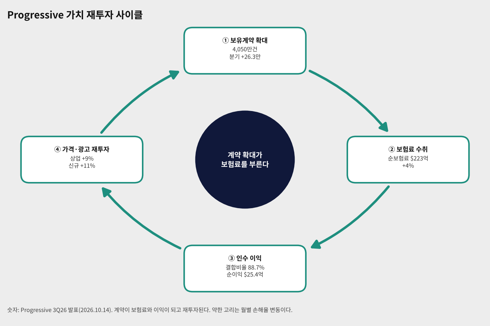

Progressive는 보험료를 받고 보험금을 지급한 뒤 남는 보험이익과 투자수익으로 돈을 번다. 가격 책정과 광고비 집행을 조정해 성장과 이익을 균형시킨다.
| 항목 | 내용 |
|---|---|
| 종목 | Progressive (PGR) · NYSE · 금융(손해보험) · 오하이오 메이필드빌리지 |
| 최근 분기(3Q26) | 순보험료 $223억, 순이익 $25.4억 |
| 핵심 사업 | 개인 자동차, 상업 보험, 주택 |
| 직원 수 | 약 70,000명(트레이딩뷰) |
| 멀티플 | PER·PEG·P/S는 08~10 항목 표 참조 |
| 직책 | 인물 | 역할·특징 |
|---|---|---|
| 회장·CEO | 트리샤 그리피스(Tricia Griffith) | CEO |
| CFO | (확인 필요) | 회사 공개 자료 기준 확인 필요 |
경영 스타일: 성장 우선. 결합비율 96% 아래를 지키는 범위에서 보험료와 계약 수를 늘리는 방식이다.
계약 위험에 따라 보험료를 세분화해 책정한다(회사 설명).
보유계약 4,050만건, 분기 순증 26.3만건.
다음 실적발표는 세 가지 질문에 답하는 자리다.
1. 결합비율이 90% 아래를 유지하나?
2. 보유계약 증가가 이어지나?
3. 실현투자손익 변동이 크나?
한 줄 판정 규칙: 첫 질문(결합비율)이 90% 아래를 유지하면 약한 고리(월별 변동)가 풀린다.
일정: 4Q26 실적은 2027.01.27 발표 예정이다. 월간 실적은 별도 공시된다.
| 분기 | 매출 | 순이익 | EPS | 조정 EPS | 특이 사항 |
|---|---|---|---|---|---|
| 4Q24 | $202.7억 | $23.6억 | 4.02 | 4.08 | |
| 1Q25 | $204.0억 | $25.7억 | 4.37 | 4.65 | |
| 2Q25 | $219.9억 | $31.8억 | 5.40 | 4.88 | |
| 3Q25 | $225.0억 | $26.1억 | 4.46 | 3.95 | |
| 4Q25 | $227.4억 | $29.5억 | 5.02 | 4.58 | |
| 1Q26 | $221.8억 | $28.2억 | 4.80 | 4.60 | |
| 2Q26 | $236.0억 | $33.1억 | 5.67 | 4.64 | |
| 3Q26 | $231.6억 | $25.4억 | 4.37 | 4.66 | 결합비율 88.7%, 실현투자손실 $1.7억 |
매출은 트레이딩뷰 스캐너의 분기 총매출이라 회사가 발표한 순매출과 다를 수 있다. 조정 EPS 열은 실현 투자손익을 뺀 값이다. 월간 실적은 회사가 별도로 공시한다. 매출·순이익·EPS(GAAP 희석)는 트레이딩뷰 스캐너, 조정 EPS는 트레이딩뷰 실적 페이지의 Reported 값이다. 분기 정렬은 오래된 분기→최신이다.

흐름 요약: 최근 분기 매출은 $231.6억로 전년 동기 $225.0억 대비 +2.9%, 순이익은 $25.4억(전년 $26.1억)다. 최근 4분기 GAAP EPS는 $19.86, 조정 EPS는 $18.48다.
| 항목 | 내용 | 3Q26 성장 | 비고 |
|---|---|---|---|
| 순보험료 | 전체 | +4% | $223억 |
| 보험료수익 | 인식된 보험료 | +5% | $218.7억 |
| 상업보험 순보험료 | 상업 보험 | +9% | |
| 보유계약 | 계약 수 | +6% | 4,050만건 |

부문별 금액은 이 보고서에 수집하지 않아 성장률로 비교했다. 상업 보험이 가장 빠르게 늘고 있다.
Progressive는 보험을 합리적인 가격에 공급해 고객의 위험을 줄이는 것을 목표로 한다.
| 축 | 내용 |
|---|---|
| 고객 | 보유계약 4,050만건 |
| 수익성 | 결합비율 88.7% |
| 성장 | 순보험료 +4% |

| 이동평균 | 값 | 종가 대비 | 위치 |
|---|---|---|---|
| 5일선 | $234.35 | -2.5% | 종가 아래 |
| 20일선 | $231.15 | -1.2% | 종가 아래 |
| 50일선 | $221.01 | +3.4% | 종가 위 |
| 100일선 | $219.12 | +4.3% | 종가 위 |
| 200일선 | $211.01 | +8.3% | 종가 위 |
52주 고가 $241.02(2026-11-05)·저가 $189.20(2026-05-29) 범위에서 종가 $228.47는 50일선, 100일선, 200일선을 웃돌고 5일선, 20일선은 밑돈다.
| 규칙 | 기준 | 현재 값 | 신호 |
|---|---|---|---|
| 장기 추세 필터 | 종가 vs 200일선 | $228.47 > $211.01 | 매수 |
| 중장기 교차 | 50일선 vs 200일선 | $221.01 > $211.01 | 매수 |
| 단기 교차 | 20일선 vs 50일선 | $231.15 > $221.01 | 매수 |
| 돈키언 채널 | 55일 고가 $241.02 / 저가 $200.96 | 중간값 $220.99 위 | 매수 |
| 1개월 모멘텀 | 21거래일 수익률 | +2.9% (기준 $221.93) | 매수 |
| 3개월 모멘텀 | 63거래일 수익률 | +3.7% (기준 $220.34) | 매수 |
| 6개월 모멘텀 | 126거래일 수익률 | +12.8% (기준 $202.60) | 매수 |
| 12개월 모멘텀 | 252거래일 수익률 | +1.4% (기준 $225.35) | 매수 |
| 종합 (8개 평균) | +1.00 | 강한 매수 |
해석: 매수 신호 8개(장기 추세 필터, 중장기 교차, 단기 교차, 돈키언 채널, 1개월 모멘텀, 3개월 모멘텀, 6개월 모멘텀, 12개월 모멘텀), 매도 신호 0개(없음). CTA 점수 +1.00(강한 매수). 14일 ATR $5.36 (2.3%), 52주 고가 $241.02 · 저가 $189.20.
| 가격 | 기준 | 무엇이 바뀌나 |
|---|---|---|
| $241.02 | 55일 고가 | 돌파 시 채널 상단 갱신 |
| $225.35 | 12개월 모멘텀 기준가 | 종가가 이 가격 위면 12개월 신호 매수 |
| $221.93 | 1개월 모멘텀 기준가 | 종가가 이 가격 위면 1개월 신호 매수 |
| $220.99 | 돈키언 중간값 | 55일 채널 중간값 위/아래로 신호가 바뀜 |
| $220.34 | 3개월 모멘텀 기준가 | 종가가 이 가격 위면 3개월 신호 매수 |
| $211.01 | 200일선 | 종가가 이 선 위/아래인지로 장기 추세 신호가 바뀜 |
| $202.60 | 6개월 모멘텀 기준가 | 종가가 이 가격 위면 6개월 신호 매수 |
| $200.96 | 55일 저가 | 이탈 시 채널 하단 갱신 |
가격 수준은 신호가 바뀌는 기준선일 뿐 진입·청산 가격 제안이 아니다. 20일/50일 교차는 이동평균 자체가 움직여 단일 가격으로 표시하지 않았다. 일봉·주봉은 종가 기준 직접 계산(고저 데이터 미사용)이다.
| 악재 요인 | 내용 | 강도 |
|---|---|---|
| 손해율 변동 | 8월 결합비율 89.3(전년 83.1) | 중간 |
| 투자손실 | 실현투자손실 $1.7억 | 중간 |
| 경쟁 | 소비자 가격 비교가 활발(내 해석) | 참고 |
| 티커 | 회사 | PER(TTM) | PEG | P/S | EPS 성장(YoY) |
|---|---|---|---|---|---|
| PGR | Progressive | 11.5배 | 1.30 | 1.44배 | +9% |
| TRV | Travelers | 10.3배 | 0.21 | 1.71배 | +50% |
| ALL | Allstate | 6.0배 | 0.14 | 0.98배 | +43% |
| CB | Chubb | 13.0배 | 0.68 | 2.36배 | +19% |
| AIG | AIG | 13.2배 | 1.34 | 1.55배 | +10% |
비교 결론: Progressive의 PER 11.5배는 Travelers·Allstate보다 높고 Chubb·AIG보다 낮다. PEG 1.30는 Travelers·Allstate·Chubb보다 높고 AIG(1.34)와 비슷하다.
현금·부채는 트레이딩뷰 스캐너 값이다. 보험사라 충당금과 투자자산이 크다.
| 지표 | 값 | 출처 | 해석 |
|---|---|---|---|
| 현금·단기투자 | – | 트레이딩뷰 스캐너(최근 분기) | |
| 총부채 | $84억 | 트레이딩뷰 스캐너(최근 분기) | |
| 순부채(부채−현금) | – | 내 계산 | 현금 대비 부채 부담 |
| 잉여현금흐름(TTM) | $152억 | 트레이딩뷰 스캐너 | |
| TTM 매출 | $917억 | 트레이딩뷰 스캐너 |
| 기준 | 매출 | P/S | 비고 |
|---|---|---|---|
| 내 계산(종가 ÷ 최근 4분기 매출 합계) | $916.8억 | 1.44배 | 시총은 정렬용 데이터에서만 사용 |
| 동종(트레이딩뷰) | – | TRV 1.71배 · ALL 0.98배 · CB 2.36배 · AIG 1.55배 | 11.19 |
해석: 보험금 지급을 위한 투자자산이 크다(내 해석).
EBITDA는 영업활동의 현금 창출력을 보는 지표이고, PEG는 PER을 EPS 성장률로 나눈 값이다. EBITDA·FCF는 트레이딩뷰 TTM 값이다.
| 지표 | 값 | 산출 |
|---|---|---|
| EBITDA(TTM) | – | 은행·증권사는 EBITDA를 산출하지 않아 생략 |
| EBITDA 마진 | – | EBITDA ÷ TTM 매출(내 계산) |
| FCF 마진 | 16.6% | FCF ÷ TTM 매출(내 계산) |
| PER(GAAP TTM) | 11.5배 | $228.47 ÷ $19.86 |
| PER(조정 TTM) | 12.4배 | $228.47 ÷ $18.48 |
| 방식 | PER | EPS 성장률 | PEG | 판정 |
|---|---|---|---|---|
| GAAP EPS (TTM $19.86) | 11.5배 | +9% ($18.25 → $19.86) | 1.30 | 기준 초과 |
| 조정 EPS (TTM $18.48) | 12.4배 | +5% ($17.56 → $18.48) | 2.36 | 기준 초과 |
판정: GAAP EPS 기준 PEG 1.30 → 1.0 초과 PEG 기준은 1.0 이하 투자 적격, 0.5 이하 적극 매수다. EPS 성장률은 최근 4분기 EPS 합계를 직전 4분기 합계와 비교한 값(내 계산)이고, 일회성 항목이 있으면 조정 EPS 행을 함께 본다.

Progressive의 사이클: 계약이 보험료와 인수 이익을 만들고 그 이익이 가격·광고에 재투자돼 다음 계약을 부른다.
| 고리 | 현재 숫자·근거 |
|---|---|
| ① 보유계약 확대 | 보유계약 약 4,050만건(+6%) · 분기 +26.3만 |
| ② 보험료 수취 | 순보험료 $223억(+4%) · 보험료수익 $218.7억(+5%) |
| ③ 인수 이익 | 결합비율 88.7% · 순이익 $25.4억 |
| ④ 가격·광고 재투자 | 상업보험 +9% · 신규 +11% |
사이클의 특징: 약한 고리는 월별 결합비율 변동이다(8월 89.3). "(내 해석)"은 보고서 수치가 아닌 해석이다.